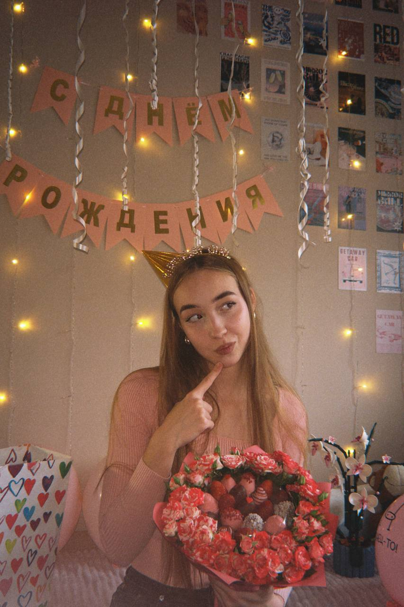

🌿 Наука и экология
С 12 лет писала научные работы. Выступала на конференциях от региональных до международных — всегда с призовыми. Участвовала в командных экопроектах.
всем привет! я -
Тихо радуюсь закатам, кошкам и тёплым вечерам

Я родилась и выросла в Тернее — крошечном посёлке в Приморском крае, затерянном между лесом и морем. Всё детство я прожила буквально в лесу, в полной гармонии с природой, рядом с любящей семьёй и домом, который всегда был моим надёжным причалом.
Я много училась, ходила в кружки, старалась впитывать всё, что можно. А потом случился переезд: я хорошо сдала ЕГЭ и поступила в Политех — в огромный, почти незнакомый город на другом конце страны. Сначала было страшно и непривычно. Но со временем я освоилась, нашла настоящих друзей и поняла, что мне здесь правда нравится.
Конечно, сейчас я тоскую по дому. Мне до сих пор снятся лес и море. Но передо мной открылось море возможностей — и у меня правда загорелись глаза. Это был большой риск — уехать так далеко. Но я ни разу не пожалела.
То, что обычно не показываю
секретики
Я слишком открыта людям, поэтому часто обжигаюсь. Романтичная и ранимая. Не всегда успеваю за своим же темпом, сомневаюсь в себе и мучаюсь с выбором.
С 12 лет писала научные работы. Выступала на конференциях от региональных до международных — всегда с призовыми. Участвовала в командных экопроектах.
5 лет настольного тенниса + волейбол до сих пор. Вокал, фортепиано, хор — и сама освоила укулеле с гитарой. Записала каверы и выпустила свою песню.
Золотая медаль, стипендия губернатора, путёвки за заслуги — так объездила полстраны. 90 баллов за профильную математику.
Политех, программирование. Новая сфера — и она мне очень нравится.
Здесь живёт кот — моё тотемное животное. Это очевидно, ведь я sonemeow. Мы связаны: если он сыт — у меня всё хорошо. Поэтому я его кормлю. На всякий случай.
Сытость кота:
Вкусняшек: 0 / 10 · голоден
Я отвечаю на письма. Не всегда быстро, но всегда от души.